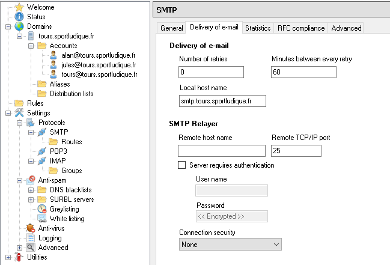
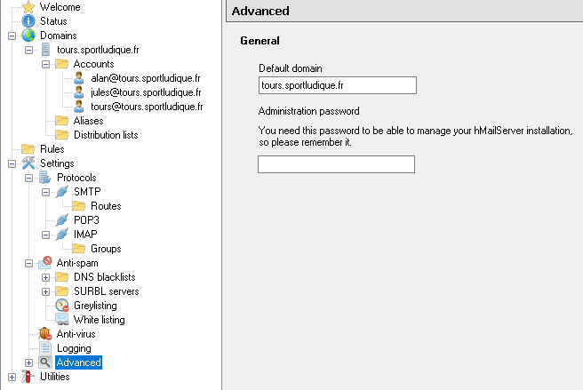
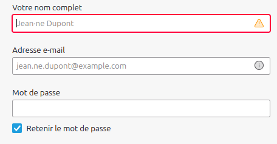

Installation HMAIL
Installation
Sur une machine virtuelle windows installer HMAIL :
Installer le serveur depuis
www.hmailserver.com
Installation du framework avec :
Microsoft .NET Framework 2.0 Service Pack 1 (x64)
ou avec Powershell :
Install-WindowsFeature Net-Framework-Core -Source D:\sources\sxs
Puis finaliser l'installation avec vpotre administrateur et mot de passe.
Configuration
Lors du début de la configuration dans l'onglet Domains ajouter votre domaine
ville.sportludique.fr
Ensuite dans Settings puis protocole:

Enfin dans l'onglet advanced du menu :

Ajouter une route permanante vers le LAN
route add -p <réseaux> mask <masque> <passerelle>
Dans le DNS
Externe
Créer un nouvelle enregistrement dans le fichier /etc/bind/db.tours.sportludique.fr.externe :
smtp IN A 183.44.37.1
IN MX 10 smtp.tours.sportludique.fr
Cet enregistrement permet d'associer smtp.tours.sportludique.fr avec l'adresse ip 183.44.37.1 et le MX c'est pour Mail eXchange.
Interne
Créer un nouvelle enregistrement dans le fichier /etc/bind/db.tours.sportludique.fr.interne :
mail IN A 192.168.37.6
IN MX 10 smtp.tours.sportludique.fr
smtp IN CNAME mail
imap IN CNAME mail
Cet enregistrement associe mail.tours.sportludique.fr à l'adresse 192.168.37.6 et il permet également à smtp et imap de pointer vers mail.
Lier les utilisateur de l'AD
On ajoute les utilisateurs de l'Active Directory grâce au script powershell suivant:
# Script de synchronisation Active Directory vers hMailServer
# Support AD distant avec authentification
# ========== CONFIGURATION ==========
# Configuration hMailServer
$hMailAdminPassword = ""
$defaultDomain = ""
$defaultPassword = "MotDePasse123!" # Mot de passe par défaut pour nouveaux comptes
# Configuration Active Directory DISTANT
$adServer = "" # Nom ou IP du serveur AD
$adDomain = "" # Domaine AD
$adUsername = "" # Utilisateur avec droits de lecture AD
$adPassword = "" # Mot de passe pour l'AD
# Construction du chemin LDAP
$ldapPath = "LDAP://$adServer/DC=,DC=,DC=,DC="
# Options
$createNewAccounts = $true
$updateExistingAccounts = $true
$accountMaxSize = 1024 # Taille max en MB
$enableAccountsByDefault = $true
Write-Host "========================================" -ForegroundColor Cyan
Write-Host "Synchronisation AD -> hMailServer" -ForegroundColor Cyan
Write-Host "========================================" -ForegroundColor Cyan
# ========== TEST CONNECTIVITÉ AD ==========
Write-Host "`n[Préparation] Test de connectivité AD..." -ForegroundColor Yellow
try {
Write-Host " → Test ping vers $adServer..." -ForegroundColor Gray
$pingResult = Test-Connection -ComputerName $adServer -Count 1 -Quiet -ErrorAction SilentlyContinue
if ($pingResult) {
Write-Host " ✓ Serveur AD accessible" -ForegroundColor Green
} else {
Write-Host " ⚠ Serveur AD non pingable (peut être normal si ICMP bloqué)" -ForegroundColor Yellow
}
Write-Host " → Test port LDAP 389..." -ForegroundColor Gray
$tcpClient = New-Object System.Net.Sockets.TcpClient
$asyncResult = $tcpClient.BeginConnect($adServer, 389, $null, $null)
$wait = $asyncResult.AsyncWaitHandle.WaitOne(3000, $false)
if ($wait) {
$tcpClient.EndConnect($asyncResult)
$tcpClient.Close()
Write-Host " ✓ Port LDAP 389 accessible" -ForegroundColor Green
} else {
Write-Host " ✗ Port LDAP 389 non accessible" -ForegroundColor Red
Write-Host " Vérifiez le pare-feu et la connectivité réseau" -ForegroundColor Yellow
}
}
catch {
Write-Host " ⚠ Erreur de test réseau: $_" -ForegroundColor Yellow
}
# ========== CONNEXION HMAILSERVER ==========
Write-Host "`n[1/4] Connexion à hMailServer..." -ForegroundColor Yellow
$hMailApp = $null
$domain = $null
try {
Write-Host " → Création de l'objet COM hMailServer.Application..." -ForegroundColor Gray
$hMailApp = New-Object -ComObject hMailServer.Application
if ($hMailApp -eq $null) {
throw "L'objet hMailServer.Application est null"
}
Write-Host " → Authentification..." -ForegroundColor Gray
$authResult = $hMailApp.Authenticate("Administrator", $hMailAdminPassword)
if (-not $authResult) {
throw "Échec de l'authentification hMailServer. Vérifiez le mot de passe."
}
Write-Host " → Récupération du domaine $defaultDomain..." -ForegroundColor Gray
$domain = $hMailApp.Domains.ItemByName($defaultDomain)
if ($domain -eq $null) {
Write-Host "`n✗ Domaine '$defaultDomain' non trouvé!" -ForegroundColor Red
Write-Host "`nDomaines disponibles:" -ForegroundColor Yellow
for ($i = 0; $i -lt $hMailApp.Domains.Count; $i++) {
$d = $hMailApp.Domains.Item($i)
Write-Host " - $($d.Name)" -ForegroundColor Cyan
}
exit
}
Write-Host "✓ Connecté à hMailServer - Domaine: $defaultDomain" -ForegroundColor Green
}
catch {
Write-Host "`n✗ ERREUR de connexion hMailServer:" -ForegroundColor Red
Write-Host $_.Exception.Message -ForegroundColor Red
Write-Host "`nVérifications:" -ForegroundColor Yellow
Write-Host "1. Service hMailServer démarré ?" -ForegroundColor White
Write-Host "2. PowerShell exécuté en Administrateur ?" -ForegroundColor White
Write-Host "3. Mot de passe administrateur correct ?" -ForegroundColor White
exit
}
# ========== RÉCUPÉRATION DES COMPTES HMAILSERVER ==========
Write-Host "`n[2/4] Récupération des comptes hMailServer existants..." -ForegroundColor Yellow
$hmailAccounts = @{}
try {
for ($i = 0; $i -lt $domain.Accounts.Count; $i++) {
$account = $domain.Accounts.Item($i)
$hmailAccounts[$account.Address.ToLower()] = $account
}
Write-Host "✓ $($hmailAccounts.Count) comptes trouvés" -ForegroundColor Green
}
catch {
Write-Host "✗ Erreur: $_" -ForegroundColor Red
exit
}
# ========== CONNEXION À L'AD DISTANT ==========
Write-Host "`n[3/4] Connexion à l'Active Directory distant..." -ForegroundColor Yellow
Write-Host " Serveur: $adServer" -ForegroundColor Gray
Write-Host " Chemin LDAP: $ldapPath" -ForegroundColor Gray
try {
# Créer des credentials pour l'AD distant
$secPassword = ConvertTo-SecureString $adPassword -AsPlainText -Force
$credential = New-Object System.Management.Automation.PSCredential($adUsername, $secPassword)
# Créer la connexion LDAP avec authentification
Write-Host " → Authentification sur l'AD..." -ForegroundColor Gray
$directoryEntry = New-Object System.DirectoryServices.DirectoryEntry(
$ldapPath,
$adUsername,
$adPassword,
[System.DirectoryServices.AuthenticationTypes]::Secure
)
# Test de la connexion
$testBind = $directoryEntry.Name
if ([string]::IsNullOrEmpty($testBind) -and $directoryEntry.NativeObject -eq $null) {
throw "Impossible de se connecter à l'AD. Vérifiez les credentials et le chemin LDAP."
}
Write-Host " ✓ Authentifié sur l'AD" -ForegroundColor Green
# Créer le searcher
Write-Host " → Recherche des utilisateurs..." -ForegroundColor Gray
$searcher = New-Object System.DirectoryServices.DirectorySearcher
$searcher.SearchRoot = $directoryEntry
# Filtre pour les utilisateurs avec email
$searcher.Filter = "(&(objectClass=user)(objectCategory=person)(mail=*))"
# Propriétés à récupérer
$searcher.PropertiesToLoad.AddRange(@(
"sAMAccountName",
"mail",
"givenName",
"sn",
"displayName",
"userAccountControl"
))
$searcher.PageSize = 1000
$searcher.SearchScope = [System.DirectoryServices.SearchScope]::Subtree
$results = $searcher.FindAll()
Write-Host "✓ $($results.Count) utilisateurs trouvés dans AD" -ForegroundColor Green
}
catch {
Write-Host "`n✗ ERREUR de connexion AD:" -ForegroundColor Red
Write-Host $_.Exception.Message -ForegroundColor Red
Write-Host "`nVérifications:" -ForegroundColor Yellow
Write-Host "1. Le serveur AD '$adServer' est-il accessible ?" -ForegroundColor White
Write-Host "2. Les credentials AD sont-ils corrects ?" -ForegroundColor White
Write-Host " Username: $adUsername" -ForegroundColor Gray
Write-Host "3. Le chemin LDAP est-il correct ?" -ForegroundColor White
Write-Host " $ldapPath" -ForegroundColor Gray
Write-Host "4. Le port 389 (LDAP) est-il ouvert ?" -ForegroundColor White
Write-Host "5. Essayez avec LDAPS (port 636) si disponible" -ForegroundColor White
exit
}
# ========== SYNCHRONISATION ==========
Write-Host "`n[4/4] Synchronisation en cours..." -ForegroundColor Yellow
Write-Host "────────────────────────────────────────" -ForegroundColor Gray
$stats = @{
Created = 0
Updated = 0
Skipped = 0
Errors = 0
}
foreach ($result in $results) {
$props = $result.Properties
# Récupérer les informations
$samAccount = if ($props["samaccountname"].Count -gt 0) { $props["samaccountname"][0] } else { "Inconnu" }
$email = if ($props["mail"].Count -gt 0) { $props["mail"][0] } else { $null }
$firstName = if ($props["givenname"].Count -gt 0) { $props["givenname"][0] } else { "" }
$lastName = if ($props["sn"].Count -gt 0) { $props["sn"][0] } else { "" }
$displayName = if ($props["displayname"].Count -gt 0) { $props["displayname"][0] } else { $samAccount }
# Vérifier si le compte est actif dans AD
$userAccountControl = if ($props["useraccountcontrol"].Count -gt 0) { $props["useraccountcontrol"][0] } else { 0 }
$isEnabled = -not ($userAccountControl -band 0x2) # 0x2 = ACCOUNTDISABLE
# Vérifier l'adresse email
if ([string]::IsNullOrWhiteSpace($email)) {
Write-Host "⊘ $displayName - Pas d'email" -ForegroundColor DarkGray
$stats.Skipped++
continue
}
# Forcer le domaine mail si l'email AD ne correspond pas
if (-not $email.EndsWith("@$defaultDomain")) {
$emailParts = $email.Split('@')
$email = "$($emailParts[0])@$defaultDomain"
Write-Host "ℹ $displayName - Email modifié: $email" -ForegroundColor Cyan
}
$emailLower = $email.ToLower()
try {
# Vérifier si le compte existe dans hMailServer
if ($hmailAccounts.ContainsKey($emailLower)) {
# MISE À JOUR
if ($updateExistingAccounts) {
$account = $hmailAccounts[$emailLower]
$account.PersonFirstName = $firstName
$account.PersonLastName = $lastName
$account.Active = $isEnabled
$account.Save()
Write-Host "↻ $email - Mis à jour" -ForegroundColor Cyan
$stats.Updated++
}
else {
Write-Host "→ $email - Existe déjà" -ForegroundColor Gray
$stats.Skipped++
}
}
else {
# CRÉATION
if ($createNewAccounts) {
$newAccount = $domain.Accounts.Add()
$newAccount.Address = $email
$newAccount.Password = $defaultPassword
$newAccount.Active = if ($enableAccountsByDefault) { $isEnabled } else { $false }
$newAccount.PersonFirstName = $firstName
$newAccount.PersonLastName = $lastName
$newAccount.MaxSize = $accountMaxSize
$newAccount.Save()
Write-Host "✓ $email - Créé" -ForegroundColor Green
$stats.Created++
}
else {
Write-Host "⊘ $email - Nouveau (création désactivée)" -ForegroundColor DarkGray
$stats.Skipped++
}
}
}
catch {
Write-Host "✗ $email - ERREUR: $_" -ForegroundColor Red
$stats.Errors++
}
}
# ========== RÉSULTATS ==========
Write-Host "`n========================================" -ForegroundColor Cyan
Write-Host "RÉSUMÉ DE LA SYNCHRONISATION" -ForegroundColor Cyan
Write-Host "========================================" -ForegroundColor Cyan
Write-Host "Comptes créés : $($stats.Created)" -ForegroundColor Green
Write-Host "Comptes mis à jour: $($stats.Updated)" -ForegroundColor Cyan
Write-Host "Comptes ignorés : $($stats.Skipped)" -ForegroundColor Gray
Write-Host "Erreurs : $($stats.Errors)" -ForegroundColor Red
Write-Host "────────────────────────────────────────" -ForegroundColor Gray
Write-Host "Total hMailServer: $($domain.Accounts.Count) comptes" -ForegroundColor White
Write-Host "========================================`n" -ForegroundColor Cyan
# ========== NETTOYAGE ==========
if ($results) { $results.Dispose() }
if ($searcher) { $searcher.Dispose() }
if ($directoryEntry) { $directoryEntry.Dispose() }
if ($domain -ne $null) {
[System.Runtime.Interopservices.Marshal]::ReleaseComObject($domain) | Out-Null
}
if ($hMailApp -ne $null) {
[System.Runtime.Interopservices.Marshal]::ReleaseComObject($hMailApp) | Out-Null
}
[System.GC]::Collect()
[System.GC]::WaitForPendingFinalizers()
Write-Host "Synchronisation terminée!" -ForegroundColor Green
Création des utilisateurs sur Thunderbird
Créer l'utilisateur avec son nom complet, son adresse mail et son mot de passe par default:

Vérifier si les serveur et les port sont correctement configuré:
Le port 143 pour imap et le port 25 pour smtp